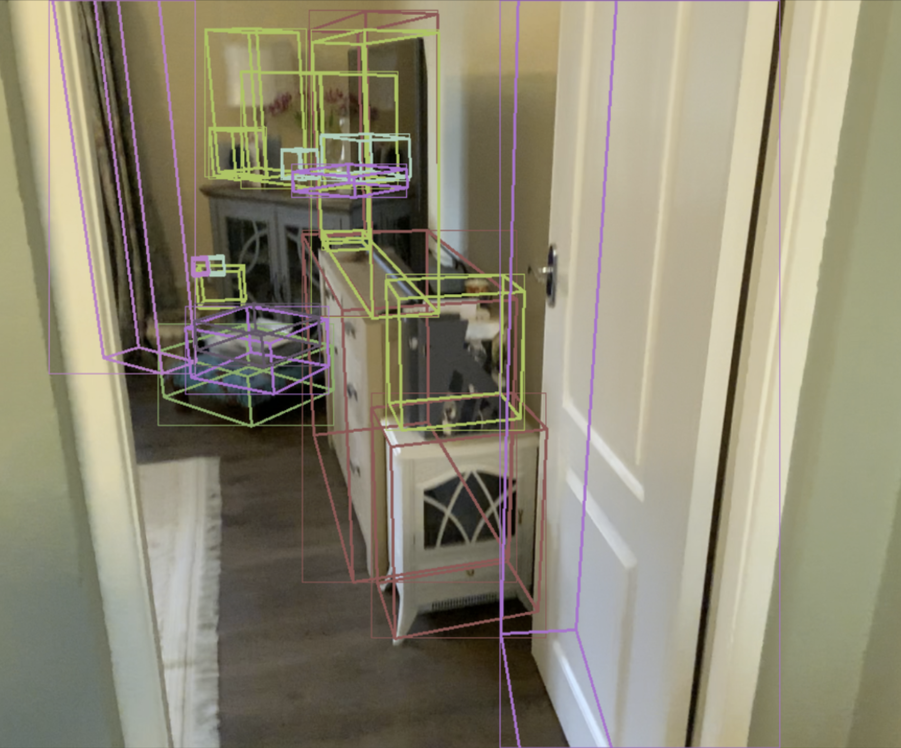

Multi-Frame 3D Perception for Large-Scale Video Sequences
An end-to-end multi-frame 3D perception system developed to leverage temporal consistency across large video datasets. The pipeline introduces SE(3)-based sequence sampling, high-throughput data processing for the CA-1M dataset, and a unified training framework that integrates multi-objective losses and Hungarian matching. The system establishes a foundation for robust temporal reasoning and large-scale 3D scene reconstruction. [Preparing for submission to ECCV 2026]